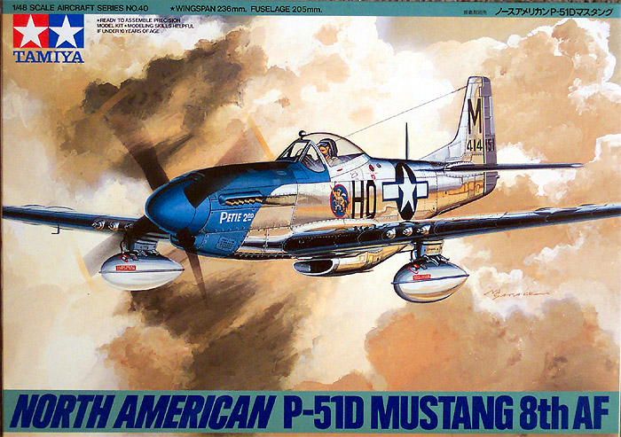
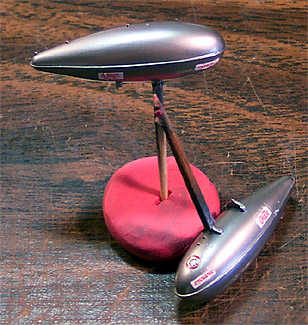

{kind=link}
{kind=link}
You may click on any of the pictures below to view larger images
{kind=link}
{kind=link}
{kind=link}
{kind=link}

Tamiya 1/48 P-51D Mustang

Kit #61040 MSRP $26.00 USD
Images and text Copyright � 2004 by Matt Swan
Developmental History
The design was for a low drag airframe and laminar flow wings, which allowed for some truly staggering, at the time, top end speed. The aircraft experienced several modifications in armament and cockpit design but when involved in aerial combat a P-51 in almost all circumstances had one option his enemy did not - he could leave.
The P51 is the most famous of the American "big three" from WWII: those being the P47, P38, and P51. It all started in 1939, when the British needed more fighter aircraft. They showed interest in the Curtiss P-40 Warhawk and the Bell P-39 Aircobra among others. Neither were their first choice, but that was the best that the Americans had and the British could not wait for any new designs. They decided the P-40 would be the one. James H. "Dutch" Kindelberger, president of North American Aviation, was approached by the British to build the P-40 at the North American production facility because Curtiss Aircraft was at full capacity.
Kindelberger somehow, with no real evidence that it could be done, convinced the British that North American Aviation could design and build a new fighter that was better than the P-40. The new fighter would fly faster, higher, farther, be more maneuverable and pack more firepower. The British took NAA at their word because they had performed well with British orders for the NAA Harvard trainer. May 23, 1940 a contract order was placed by the British for the first 320 aircraft designated NA-73.
North American designers Raymond Rice and Edgar Schmued immediately set about meeting the requirements. Schmued had been a part of Willy Messerschmitt's design group in Germany; no doubt the somewhat angular lines of the new fighter came from this relationship. After 78,000 man-hours and 102 days later, the prototype, NA-73X, rolled out of the hangar - without an engine. 18 days later, the Allison V-1710-39 was ready and on 26 October 1940, NX19998 took to the skies for its maiden flight with test pilot Vance Breese at the controls.
Allison-powered Mustangs began operations in 1941 primarily for photo recon and ground support use due to its limited high-altitude performance. Significant design changes came about when the Rolls-Royce Merlin V-12 was used in the P-51B/C. This new engine revealed much improved speed and service ceiling, and in Dec. 1943, Merlin-powered P-51Bs first entered combat over Europe. One of the problems encountered with the Merlin-powered P-51B/C was the poor view from the cockpit, particular towards the rear. The "Malcolm hood" fitted to the P-51B/C was an early attempt to correct this deficiency. However, a more lasting solution was sought. A P-51B (43-12101) was selected to be modified as the test vehicle for a new all-round bubble canopy. The aircraft was redesignated XP-51D. The new bubble-shaped hood gave almost completely unobstructed vision around 360 degrees with virtually no distortion.
Another visible change introduced by the P-51D was in the increase of the wing root chord. The wheel bays and doors were modified and the "kink" in the wing leading edge was made much more pronounced. The "kink" in the wing of the P-51B was barely noticeable, but it was much more pronounced in the P-51D. The P-51D/K with its bubble-top canopy was perhaps the best-known version of the Mustang and was favored among most pilots. It was also the most widely used variant of the Mustang, a grand total of 8102 machines of this type being produced. In all over 15,000 P-51 Mustangs of all types were built from 1940-1945. With the hard work of Warbird fanatics around the globe, about 280 P-51s still exist today with more than half still airworthy!
The Kit
Surprisingly, there is not that much involved in this kit, parts wise. Inside the box there are two large plastic bags, each containing a single main parts sprue. There is a small sprue with the pilot, a set of clear parts and a single poly cap for the propeller sealed in its own little bag.
The main sprues of parts are all classic Tamiya engineering. Everything displays finely engraved panel lines and rivets with deeper engravings for flight control surfaces. There is no apparent flash visible on any of the parts and there are no noticeable injector pin markings or sinkholes anywhere. I removed several of the main pieces from the trees and dry fit them. They fit very well with no apparent misalignments. The wing sections fell into place quite nicely and the main cockpit floor pan piece fit well into the fuselage. These main pieces pretty much held together all by themselves without any tape or anything else � a good demonstration of how well they were designed. While the kit is advertised as having two canopy choices I could not really see any differences between the two main canopy pieces that are provided but my inspection was with both pieces still on the trees. The clear parts have excellent clarity and no flash is present on these parts either.
Tamiya does not provide any armament load-out for this aircraft but does include two drop tanks. The flaps are designed to be installed in the dropped position. The propeller is provided with individual blades and we are given two options for the exhaust shrouds. Overall, we have 54 pieces done in light gray plastic, 5 pieces in clear polystyrene and a single poly cap, 60 pieces in total. As I said, not a very involved kit parts wise. As a final note you must take care when purchasing one of these kits, Tamiya has also issued this kit as a chromed version and it carries the same box number, 61040.
Decals and Instructions
Something slightly different is happening with Tamiya decals these days. In many model kits a single sheet of rice paper that tends to slide off to the side and ultimately provides very little protection covers the decals. Tamiya is stapling this rice sheet onto the decal sheet to prevent it from shifting. The down side of this is that you must be careful removing the staple or you could damage the decal sheet. In this kit we get two sheets of decals, one protected by the rice paper and a second enclosed in a bag with a tree of parts (no too bright an idea there). There are marking for four different aircraft from the 8th Air Force and invasion strips are included here as well. The four aircraft detailed are: John C. Meyer of the 352 FG 487th FS, Leonard K. Carson of the 357th FG 362nd FS, Thomas J. Christian of the 361st FG 375th FS and Urban L. Drew of the 361st FG 375th FS.
The decals include extensive service stencils and reasonable propeller markings. I am critical of kit propeller markings after experiencing the quality of Mike Grant Designs decals. The decals display good color density and good print registry. While I have experienced some older Tamiya decals that were excessively thick, these appear to be of a standard thinness and hopefully will lay down well on the model.
The instruction booklet is nice, it has a nice little history of the Mustang in four different languages and an extensive color chart. All the paint codes are for Tamiya colors but it does miss a few numbers that appear later in the construction steps. Over the next five pages we have ten exploded view construction steps and some painting guide information. The final two pages cover decal placement and paint scheme demarcations.
Conclusions
This Tamiya kit is probably one of the easiest Mustang kits to put together on the market today. The engravings are crisp and clean, the parts fit well, and the decals are fairly inclusive on service markings and give you a nice selection of aircraft to model. The directions are classic Tamiya and will get you through the assembly with little pain and suffering. Every World War Two aircraft collection should have at least one Mustang (if not more) and this is a near perfect kit to build the D from.
Construction
3/3/04
I have accepted this as a commission build to be presented to Lt. Col. Curtis Smart. One of the fine modelers from Hyperscale donated parts of Aeromaster sheet #48-368 that covered the markings for Col. Smart�s aircraft. Unfortunately Aeromaster got the tail markings wrong, they show the aircraft as 5E-X when in actuality, or at least according to Col. Smart, it was 5E-V so this will have to be corrected. I will be using the basic stencils from the kit sheets in conjunction with the Aeromaster pieces and a replacement tail code printed with the Testors ink jet decal package. The model will be finished with Alcald Lacquer and ultimately mounted on a mirror base for presentation.
3/29/04
This begins as a pretty typical build with the interior areas getting a good coat of Zinc Chromate Green. The floor pan was done with a light tan then dry brushed with rust to help simulate wood. The dash has nice raised detail for the instrument outlines but nothing for the faces. This was painted black then dry brushed with white to show the detail. Side panels were also done with black and dry brushed with silver. Various details were picked out with red and yellow enamels and the entire interior got a good wash with a black/brown mixture.
Tamiya provides a seated pilot for this kit and it is very obvious that they intend for you to build this with the pilot in place as there are no seat belts molded in or provided as decals. I usually have quite a few various photo-etched seat belts and buckles in the spares box but when I looked I discovered that I had run out. All construction came to a screeching halt while I ordered a set of Eduard belts from Great Models Web Store. While waiting for those to arrive I did a few detail tasks like building some battery and radio cables out of very fine fuse wire. This was painted light gray, bent to shape and superglued into the compartment behind the pilot. The internal radiators were painted and the landing gear bay details were done then I ran out of steam and set the project aside for a week.
At last, the seat belts have arrived (see picture at right) and they are a very nice set featuring multiple overlays that will give them good depth. There are enough belts in the kit to handle a few aircraft in the future also. After test fitting the cockpit to the fuselage I have decided to leave the seat out until after the main aircraft has been painted. Now I can close up the fuselage and install the lower wing half. The basics of this kit go right together and fit very well. Once the lower wing was secure I glued the top halves on and glued the elevators in place.
A few additional exterior pieces were placed such as the lower intake housing and the engine hood. I checked the alignment of the elevators several times while the glue dried to ensure that they were perpendicular to the rudder. The last couple of models I have built have been either limited run Czech kits or 1970s Revell kits so this one seems to just about want to go together all by itself. So far not a single seam is going to need putty � that just doesn�t seem right after those other builds.
4/6/04
So far this kit has been a real �walk in the park�. Everything fits just like it is supposed to, panel lines match right up, no major clean-up or modifications have been needed. The build has been so trouble free that I really have not felt challenged in any way. All the primary pieces are in place and the pitot tube and aerial have been glued in place. The landing gear bays, radiator inlets/outlets and cockpit have all been packed with damp tissue paper. All tissue edges have been carefully tucked in using an old dental pick. Now it�s time to head to the paint room.
As I stated at the beginning of this build, this will be finished with Alclad 2 lacquers. Many modelers like to use acrylic primers for lacquer but I like to use a lacquer primer.
I am using Krylon Gloss Black purchased from Wal Mart in a big rattle can. It�s not feasible to shoot this straight from this can, as the nozzle does not give you any control whatsoever. I decant about 2 ounces of paint by placing a section of a drinking straw to the spray head and holding the other end in an old film canister while depressing the spray head. Now I can pour some paint into my Badger 150 airbrush and get busy with the model. Previously I had prepared some of the smaller parts for painting that would not be immediately attached to the model like the drop tanks and landing gear doors. I carefully super-glued a toothpick onto the sprue the gear doors are attached to and at the connection point for the drop tanks. These are simply to act as handles while painting and to keep me from getting painted. You can click on the image at the right to view a larger picture of all the pieces primed. They will get a few days for the paint to set and then the first coats of Alclad will go on.
4/13/04
After three light coats of Alclad 2 Aluminum over the course of a day I set the model aside to cure. The sheet of Eduard seatbelts was airbrushed with a very light gray then a set was assembled for this plane. Each upper belt is a two-piece assembly and each lap belt consists of three pieces. The buckles were painted with Tamiya Silver and the belts were then installed on the seat. Now everything gets a coat of sludge wash to add some more depth.

Having a handle on these drop tanks has been very helpful. They have been airbrushed with Alclad 2 Dark Aluminum and after that had cured the decals were applied. Once the paint had cured on the model I masked off a few panels and shot some Dark Aluminum to create some contrast. I studied quite a few other Natural Metal Mustangs before selecting a few panels for this treatment. The landing gear doors, canopy framing and the wheel hubs were also done with Dark Aluminum. The exhaust stacks were done with Magnesium and the pipes were brush painted with Tamiya Burnt Iron. I have also drilled out each of the exhaust stacks with a fine drill bit. Once again everything needs to cure for a day before I can mask for the anti-glare panel. That is done with Tamiya Flat Black.
Moving right along, now I can address the propeller and hub. Once again I employ toothpicks for paint handles and blocks of modeling clay to hold things while they dry. After a good coat of gray Model Master primer the tips of the blades have been hit with some yellow while the two spinner hub pieces are painted flat Header White. After the yellow on the blades had dried I masked them and shot them with Tamiya Flat Black. More cure time passes and they get two brush coats of Future before the prop decals were applied.
5/3/04
Isn�t it amazing how the amount of modeling work decreases as the weather gets better? We have been experiencing 70 degree temperatures recently and that makes it difficult to sit inside and model, difficult but not impossible! Between the nice weather and a trip to San Francisco I have managed to make some progress on this build. The landing gear and drop tanks have been installed, the exhaust stacks are in and the decals have been started. The clear parts were dipped in Future, allowed to cure for a few days and then masked. I airbrushed then with some interior Zinc Chromate Green then shot Alclad dark aluminum over that. The decals that go onto the main canopy have a very slight overhang so the canopy had to rest upside down while the decals dried then I used a fresh razor to carefully trim the excess off.
I am using the Testors ink jet decal package to print the corrected tail markings. The paper from Testors is rolled and packaged into a small box and if you try to use it directly from the box it will most likely jam in your printer (do you wonder how I know this?) so for the last few days I have had the white sheet of decal paper pressed under some model boxes in preparation for printing � that will happen tonight. The propeller has been completed and attached also. A few more days of final detail work and I can turn my attentions to the display base.
5/4/04
I printed my tail codes last night and everything went as planned. This is the second time I�ve used the Testors decal package, the first time I applied the ink fixative a little too heavily and had some ink runs. This time I applied the fixative in three light dustings with the decals held in tweezers. I held them about a foot and a half away from the rattle can and misted them � it seemed to work well. I will let them dry overnight and apply them next. In this picture below the decals have only been done on the one side so far but you can see how things have progressed.
5/15/04
So now that I have most of the decals in place I go back and take a look at my reference material to make sure that I place the nose art properly and one little detail suddenly comes to my attention � the anti glare panel should be Olive Drab, not Flat Black. Doh!
To fix this little problem I begin by sealing the decal around the nose with Future floor polish and letting that dry for a day. Once that was done I carefully laid a small strip of medium tack masking tape over the decal then masked off the rest of the panel and headed for the paint room. Removing the mask from that decal was probably the scariest part but fortunately the decal showed no desire to lift and the panel color was successfully changed. Now I was able to finish the decals. After the rest of the markings had dried down the entire aircraft was coated with Future. The formation lights on the wing tips and under the wing were painted and the gun barrels were touched with some Burnt Iron. I used some ground Sienna chalk to create some light exhaust staining. The secondary gear doors were placed in the closed position, as they would be immediately after engine shut down. I know that these will drop quickly as hydraulic pressure bleeds off but I thought I would show them closed as the background picture shows them closed also. The canopy was glued in place with some Testors clear parts cement and she was placed on a mirrored base for display. This will all be carefully packaged up for shipment to Col. Smart now.
You may click on any of the pictures below to view larger images
8/16/04
I spoke to Col. Smart after the model was presented to him and he recounted the story of the plane�s name. As the story goes, just prior to being assigned to England to fly fighter aircraft then Lt. Smart�s wife gave birth to the first of three daughters. Estrellita was the title of a Mexican song that was popular in those days, which translated to �Little Star�, and this was given to the child as her name. Smart�s first P-51 was named Estrellita but the aircraft was lost, so too was the second and ultimately we come to the third aircraft to bear the name, now Estrellita III. The nose art was never completed as intended. If you notice the odd extension to the bottom of the �E�, this was supposed to be a shooting star with a classic early US star with red center forming the shooting star portion.
Lt. Col. Curtis Smart is in the evening of his days now and commented about having to pay a price to have the privilege of flying P-51 Mustangs but the price he paid was for all of us to have the privilege to live free. Lt. Col. Smart, I salute you and thank you for your selfless sacrifice. May the rest of your days be free of pain and worry.


{kind=link}